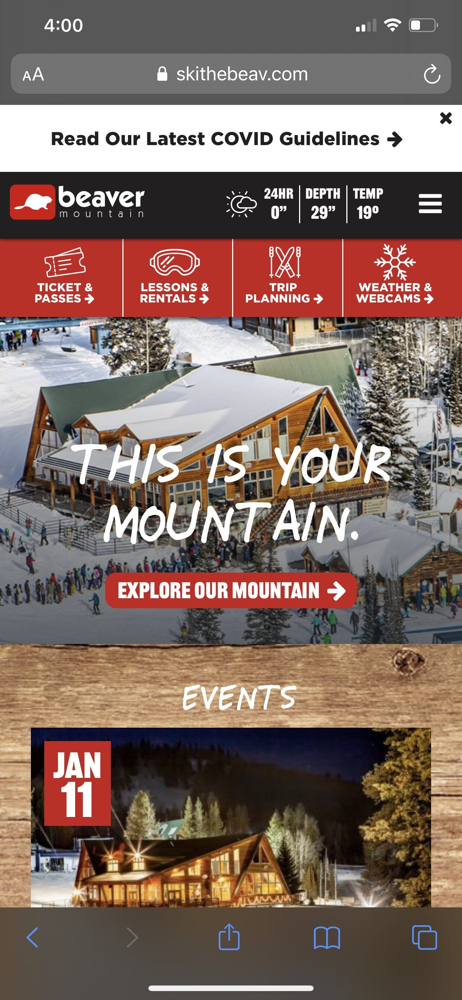
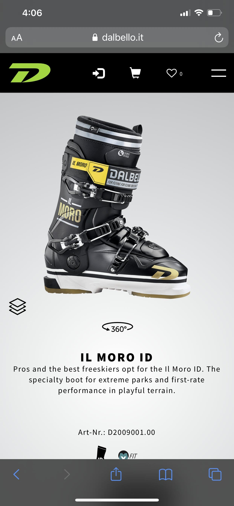
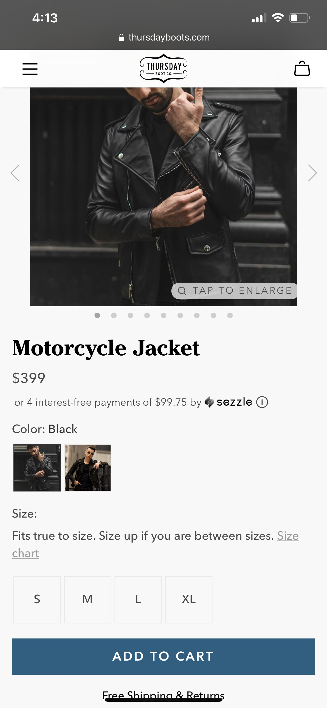

Visual Hierarchy
Beaver Mountain
www.skithebeav.com The hierarchy of the page first draws your eyes to the large image with text. You are next drawn to the upcoming events the mountain will be hosting. You then will look at the different links for the site. And last you will ook at the quick display showing the mountain conditions. They did a very good job with display what they felt was most important and the main messages they wanted to users to see.
White Space and Clean Design
Dalbello
www.dalbello.it I feel the white space for the page is done very well. There is no clutter and the spacing between the image and the product details is done very well.
Fitt's Law
Thursday Boot Co.
www.thursdayboots.com The buttons to select the size of the jacket and to add the jacket to your cart are easy to find and are in a very easy to reach location on a mobile device.